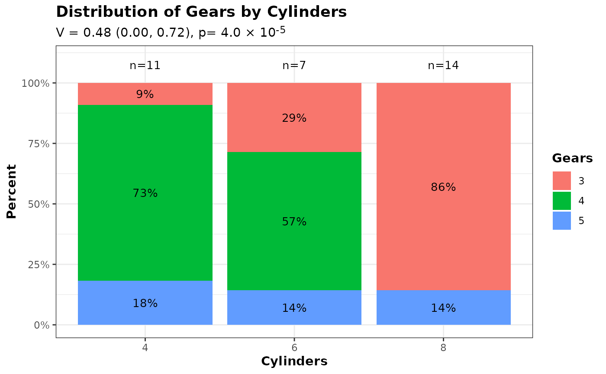
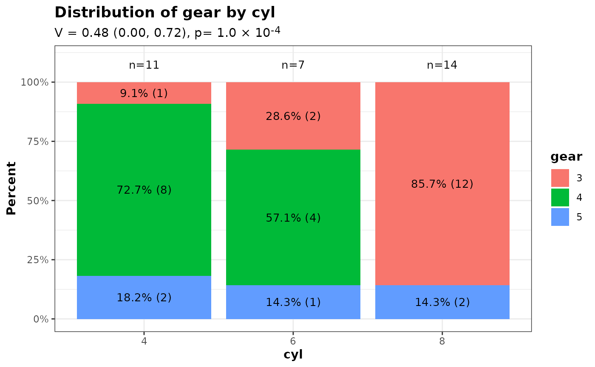
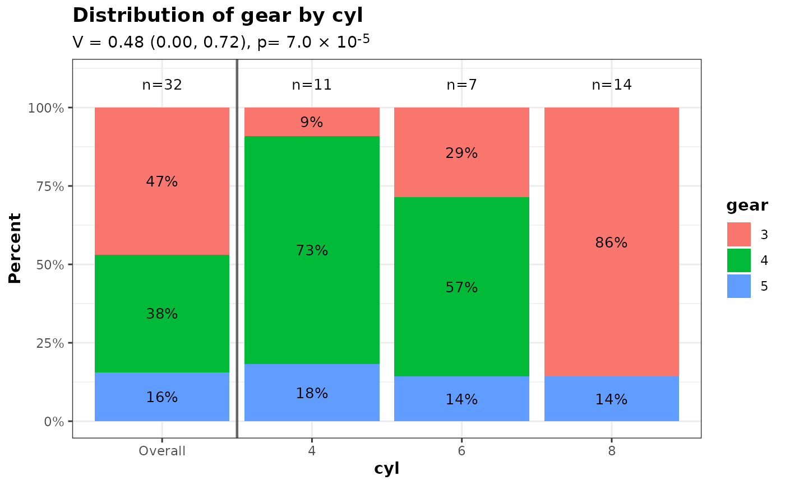
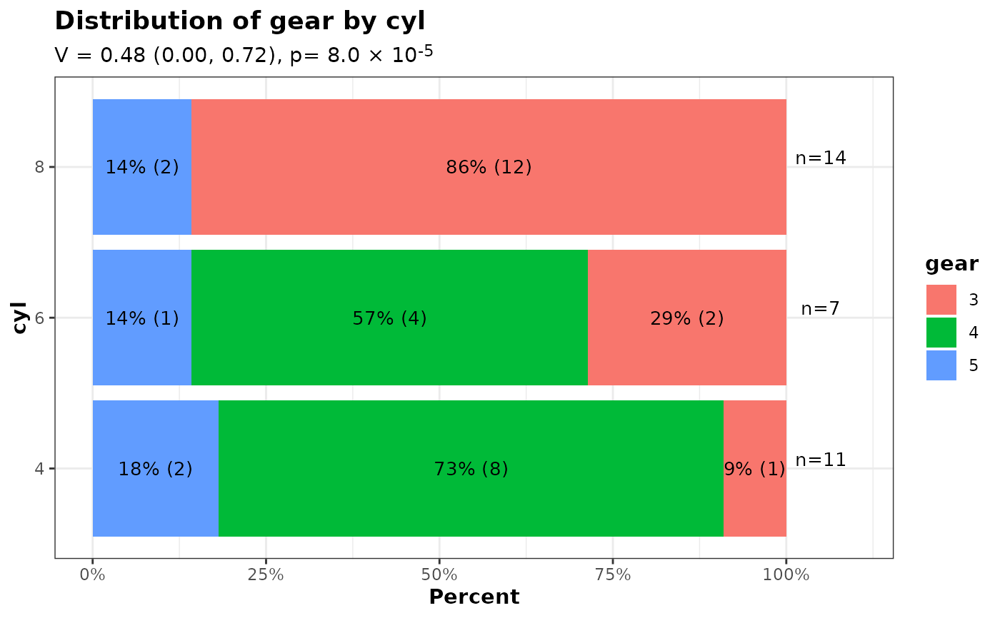
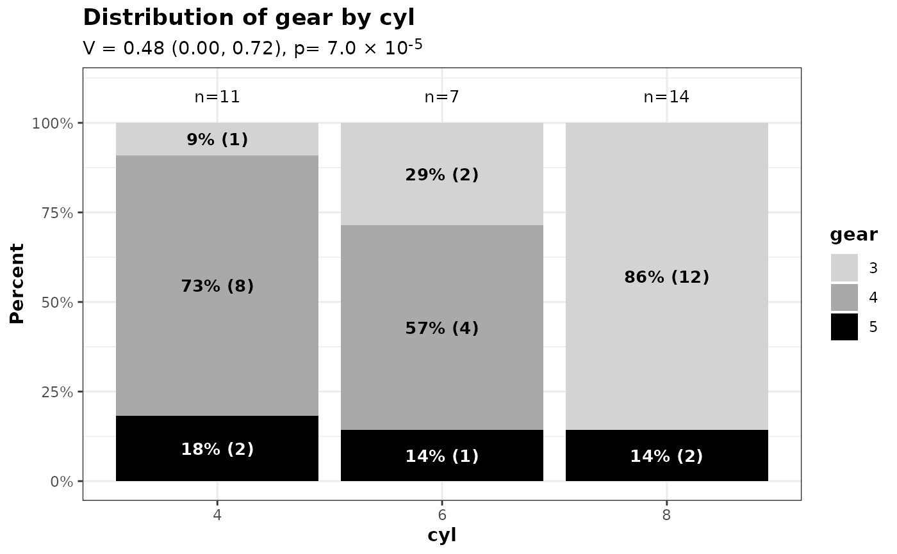
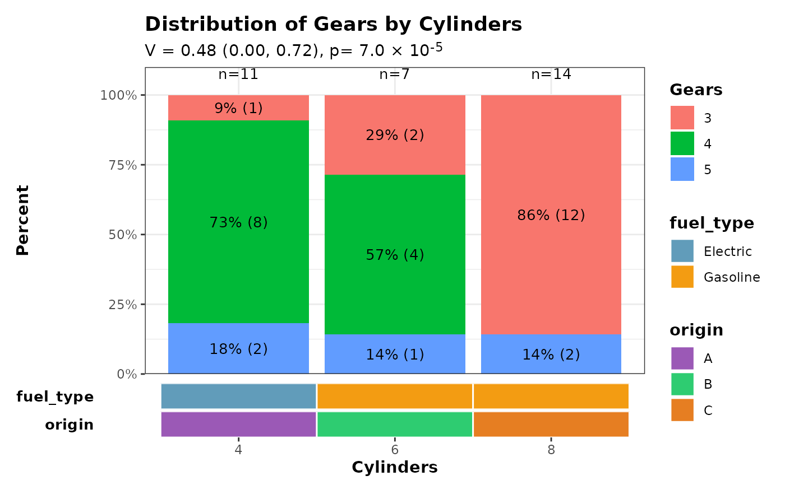

Stacked percent bar chart for two categorical variables
Source:R/plot_2_categorical_vars.R
plot_2_categorical_vars.RdCreate a stacked percent bar chart of an x categorical variable broken down by a second categorical variable. The plot includes within-group percentages, group sample sizes above each bar, and (optionally) a subtitle showing Cramer's V and the test p-value.
Usage
plot_2_categorical_vars(
d,
xvar,
yvar,
xvar_label = NULL,
yvar_label = NULL,
yvar_colors = NULL,
yvar_text_colors = NULL,
title = NULL,
title_nchar_wrap = NULL,
show_effect_size = TRUE,
n_pct_size = 3.5,
inside_bar_stats = c("pct", "n", "pct_and_n", "none"),
inside_bar_text_bold = FALSE,
pct_digits = 0,
flip = FALSE,
xaxis_labels_nchar_wrap = 20,
y_max = 110,
n_ypos = y_max - 5,
include_overall_bar = FALSE,
overall_label = "Overall"
)Arguments
- d
A data.frame containing the variables.
- xvar
Character scalar, name of the categorical x variable (column in d).
- yvar
Character scalar, name of the categorical y variable (column in d).
- xvar_label
Optional character scalar to use for the x axis label.
- yvar_label
Optional character scalar to use for the legend label.
- yvar_colors
Optional character vector of colours to use for the y-variable levels. Can be either:
An unnamed vector of length equal to
nlevels(d[[yvar]])(positional mapping)A named character vector with names corresponding to
yvarlevels (partial or complete mapping)
Provide colour names (e.g. "red") or hex codes (e.g. "#FF0000"). If using a named vector, unmapped levels will be filled with ggplot2's default palette. If NULL (default), ggplot2's default palette is used for all levels.
- yvar_text_colors
Optional named character vector of colors for the text inside bars. Names should correspond to the levels of
yvar. If a level is not included in the vector, the text color defaults to black. If NULL (default), all text is black.- title
Optional character scalar for the plot title.
- title_nchar_wrap
Optional integer scalar. Maximum number of characters per line of title. If NULL (default), no wrapping is applied.
- show_effect_size
Logical; if TRUE the subtitle will include Cramer's V and p-value.
- n_pct_size
Numeric scalar. Point size used for the percent labels inside the stacked bars and for the group N labels above bars. Must be a single positive numeric value.
- inside_bar_stats
Character scalar controlling what statistics are printed inside the stacked bars. One of
"pct"(default; shows within-group percentage),"n"(shows count only),"pct_and_n"(shows percentage with count in parentheses, e.g. "12% (34)"), or"none"(no labels inside bars).- inside_bar_text_bold
Logical scalar (default FALSE). If TRUE, the text inside the bars will be displayed in bold.
- pct_digits
Integer scalar (default 0). Number of decimal places to show for the within-group percent labels (e.g. 0 => "12%", 1 => "12.3%"). Must be a single non-negative numeric value.
- flip
Logical scalar (default FALSE). If TRUE the plot is flipped to show horizontal bars.
- xaxis_labels_nchar_wrap
Integer scalar. Maximum number of characters per line for x-axis group labels. Longer labels will be wrapped to multiple lines.
- y_max
Numeric scalar. Maximum y-axis limit for the plot.
- n_ypos
Numeric scalar. y-axis position for the group N labels.
- include_overall_bar
Logical scalar (default FALSE). If TRUE, a pooled "Overall" bar showing the marginal distribution of
yvaracross all observations is prepended to the left of the per-group bars, separated by a solid vertical line.- overall_label
Character scalar (default
"Overall"). Label used for the pooled bar wheninclude_overall_bar = TRUE.
Examples
ggplot2::theme_set(theme_bw2())
data(mtcars)
mtcars$cyl <- factor(mtcars$cyl)
mtcars$gear <- factor(mtcars$gear)
# Default usage
p <- plot_2_categorical_vars(
d = mtcars,
xvar = "cyl",
yvar = "gear",
xvar_label = "Cylinders",
yvar_label = "Gears"
)
p$ggplot

# Show both percent and count inside bars
p_pct_n <- plot_2_categorical_vars(
d = mtcars,
xvar = "cyl",
yvar = "gear",
inside_bar_stats = "pct_and_n",
pct_digits = 1
)
p_pct_n$ggplot

# Include a pooled 'Overall' bar on the left
p_overall <- plot_2_categorical_vars(
d = mtcars,
xvar = "cyl",
yvar = "gear",
include_overall_bar = TRUE
)
p_overall$ggplot

# Horizontal bars using `flip = TRUE`
p_horiz <- plot_2_categorical_vars(
d = mtcars,
xvar = "cyl",
yvar = "gear",
flip = TRUE,
inside_bar_stats = "pct_and_n"
)
p_horiz$ggplot

# Customize text colors by yvar level, and use bold text inside bars
p_text_colors <- plot_2_categorical_vars(
d = mtcars,
xvar = "cyl",
yvar = "gear",
yvar_colors = c("3" = "lightgrey", "4" = "darkgrey", "5" = "black"),
yvar_text_colors = c("3" = "black", "4" = "black", "5" = "white"),
inside_bar_stats = "pct_and_n",
inside_bar_text_bold = TRUE
)
p_text_colors$ggplot

######### Combine stacked barchart with a horizontal covariate bar
# The covariate heatmap is designed for group-level annotations where each
# x-axis group has exactly one value per covariate (e.g. treatment arms with
# fixed properties). Here we use simulated group-level covariates.
# Create the main stacked barchart
p <- plot_2_categorical_vars(
d = mtcars,
xvar = "cyl",
yvar = "gear",
xvar_label = "Cylinders",
yvar_label = "Gears",
inside_bar_stats = "pct_and_n"
)
# Simulated group-level covariates: one row per cylinder group, in the same
# order as the barplot x-axis (i.e. factor level order).
cov_data <- data.frame(
cyl = factor(c("4", "6", "8")),
fuel_type = factor(c("Electric", "Gasoline", "Gasoline")),
origin = factor(c("A", "B", "C"))
)
# Verify x-axis labels match before hiding the barplot x-axis.
# patchwork's axes = "collect_x" cannot reach into a nested patchwork,
# so we suppress the duplicate axis manually.
barplot_xlabels <- levels(mtcars[["cyl"]])
covbar_xlabels <- as.character(cov_data[["cyl"]])
stopifnot(
"x-axis labels of barplot and covariate bar must be identical" =
identical(barplot_xlabels, covbar_xlabels)
)
p$ggplot <- p$ggplot +
ggplot2::theme(
axis.title.x = ggplot2::element_blank(),
axis.text.x = ggplot2::element_blank(),
axis.ticks.x = ggplot2::element_blank()
)
# Create horizontal covariate bar.
# Use collect_guides = FALSE so the outer wrap_plots() can collect all
# legends together; if collect_guides = TRUE (the default) the inner
# patchwork absorbs the guides before the outer composition sees them.
cov_bar <- plot_covariate_heatmap(
dataset = cov_data,
color_map = list(
fuel_type = c("Electric" = "#619CBA", "Gasoline" = "#F39C12"),
origin = c("A" = "#9B59B6", "B" = "#2ECC71", "C" = "#E67E22")
),
row_id_var = "cyl",
show_column_names = TRUE,
show_row_names = TRUE,
horizontal = TRUE,
collect_guides = FALSE,
x_title = "Cylinders"
) &
ggplot2::scale_x_discrete(expand = ggplot2::expansion(add = 0.6)) &
ggplot2::theme(panel.border = ggplot2::element_blank())
#> Scale for x is already present.
#> Adding another scale for x, which will replace the existing scale.
#> Scale for x is already present.
#> Adding another scale for x, which will replace the existing scale.
# Combine plots vertically with collected legends
patchwork::wrap_plots(
p$ggplot +
ggplot2::scale_y_continuous(
limits = c(0, 110),
breaks = seq(0, 100, by = 25),
labels = scales::label_number(suffix = "%"),
expand = ggplot2::expansion(add = c(0, 0))
),
cov_bar,
ncol = 1,
heights = c(0.85, 0.15),
guides = "collect"
) & ggplot2::theme(legend.position = "right")
#> Scale for y is already present.
#> Adding another scale for y, which will replace the existing scale.
